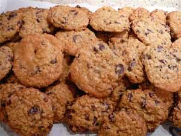

Everybody loves cookies
Everybody loves cookies
Anyone who has read my Facebook page this week has noticed that I’ve been eating cookies in bed most mornings (and afternoons, and evenings). In fact I’m eating a lemon square as I’m typing this post, and it’s not easy to type with powdered sugar on your fingers, not to mention flakes of buttery shortbread crust cascading all over your teeshirt, but someone’s got to get rid of these excess cookies so we can all go on with our lives. I’ve already sent cookies into the office with my husband twice and I think his coworkers are finally getting tired of my baking.
Why do we have all these cookies, you might be asking yourselves? Well, I’ll tell you. Last weekend we had a graduation party for Calvin, an afternoon affair, and in trying not to tempt fate with the menu, by planning a cook-out or anything that would depend on being able to be outdoors, I decided to put on a cookie buffet. I know big decorated cakes are traditional for graduation parties but I have learned that kids don’t really seem to like cake. I’ve been baking delicious birthday cakes for over 20 years and year after year scraping most of them into the garbage. I remember baking one for a similar party for Leland several years back and he and his friends had a food fight with it. Remember that, Leland?
Both Leland and a dear friend suggested making lots of different cupcakes, since they are popular now, and my friend sent me some wonderful recipes. But when you think about it, cupcakes are really just small cakes, and when I proposed the idea to Calvin he made a sour face. So I saved those recipes to a folder for future reference and went back to my cookie idea, although Calvin begged me to add some salty snacks to the mix, and I also decided I should throw in a bowl of watermelon wedges and a vegetable tray, since parents were coming and I wanted to look responsible.
We had a glorious week of cool days, so baking was a pleasure. I don’t know what I would have done if the weather had been hot and humid, since we don’t have air-conditioning in our old house and my kitchen is probably the hottest room in it. Possibly decided just to order pizza for the party. I baked six different kinds of cookies: the Hungarian shortbread that I’ve posted about before on this blog, some wonderful ginger squares with a streusel topping, peanut butter, lemon squares, oatmeal chocolate chip, and thick and chewy double chocolate cookies from Baking Illustrated. A friend also brought over a platter of coconut macaroons that she made for me.
The parents were quite impressed with the cookies and ate a lot of them; the problem was that there simply weren’t enough parents at the party to make a dent in the number of cookies I had baked. The kids ate some, but were much more interested in the big bowls of home made salsa and hummus with their respective tortilla and pita chips, and everyone pretty much ignored the watermelon and vegetables.

The lemon squares and ginger bars came from the King Arthur Flour Cookie Companion, and the oatmeal chocolate chip cookie recipe came from the King Arthur Flour website. Here’s a link to it – they call it Escapade in Oatmeal – it’s crucial to use dried cherries instead of raisins; in my opinion that’s what really elevates this cookie from the ordinary to the sublime.
I had always thought that the gold standard in peanut butter cookie recipes was that in the Joy of Cooking but my mother taught me otherwise when she started making the one from a Cook’s Illustrated magazine, and fortunately they included the recipe in their Baking Illustrated. My son, Jon, said it’s the best cookie he ever ate. I feel sorry for people who are allergic to peanuts, don’t you?
Peanut Butter Cookies from Baking Illustrated
makes about 36
- 2 1/2 cups all-purpose flour
- 1/2 teaspoon baking soda
- 1/2 teaspoon baking powder
- 1 teaspoon salt
- 2 sticks (16 tablespoons) butter, softened but still cool
- 1 cup packed brown sugar
- 1 cup white sugar
- 1 cup extra-crunchy peanut butter (they recommend Jif)
- 2 large eggs
- 2 teaspoon vanilla extract
- 1 cup dry-roasted peanuts, pulsed in a food processor to resemble bread crumbs (not paste)
1. Adjust the oven racks to the upper and lower-middle positions and heat the oven to 350º degrees. Line 2 large baking sheets with parchment paper or spray them lightly with cooking spray.
2. Whisk the flour, baking soda and powder, and salt together in a medium bowl; set aside.
3. Either by hand or with an electric mixer, beat the butter until creamy. Add the sugars; beat until fluffy, about 3 minutes with an electric mixer, stopping to scrape down the bowl as necessary. Beat in the peanut butter until fully incorporated, then the eggs, 1 at a time, then the vanilla. Gently stir the dry ingredients into the peanut butter mixture. Add the ground peanuts and stir gently until just incorporated.
4. Working with a generous 2 tablespoons each time, roll the dough into 2- inch balls. Place the balls on the prepared baking sheets, spacing them 2 1/2 inches apart. Press each dough ball twice with a dinner fork dipped in cold water to make a crisscross design.
5. Bake until the cookies are puffed and slightly brown around the edges but not on top, 10-12 minutes, rotating the baking sheets front to back and top to bottom halfway through the baking time. (The cookies will not look fully baked.) Cool the cookies on the baking sheets until set, about 4 minutes, then transfer to a wire rack with a wide metal spatula to cool completely.
Note: I chilled the dough for a half hour or so before shaping.
Comments
I LOVE to eat cookies for breakfast. Actually, I’d prefer to skip the dessert after dinner and save it for the morning. I’ve seen the Cook’s Illustrated recipe (I’ve got the bound editions for every year from the beginning), but I haven’t tried it. I was just talking to my husband about making peanut butter cookies, so it must be in my stars for this week.
Drat! Guess I’ll have to get Baking Illustrated since you didn’t share the double-chocolate-cookie recipe. (And, yes, I do feel sorry for people allergic to peanuts.)
A cookie isn’t really much different than a muffin or other pastry, is it, Mary?
Sorry Janet! By the time I was making the chocolate cookies I was in automaton mode and didn’t have the camera in the kitchen. But Baking Illustrated is a great book, worth getting in any case, and they often run specials on their books.
Sounds wonderful. Thanks for sharing.
Add a comment